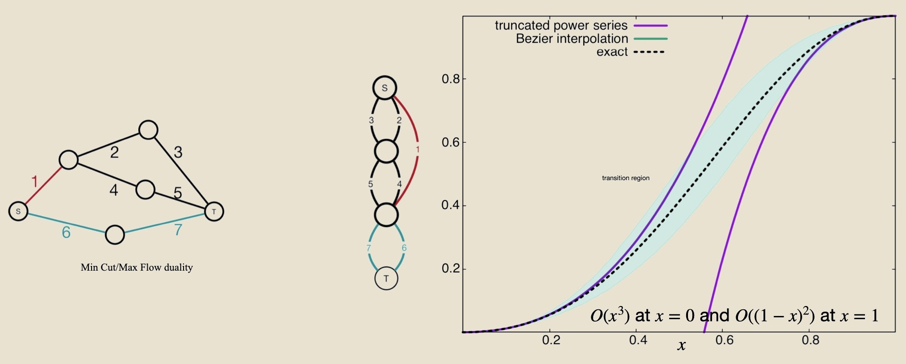
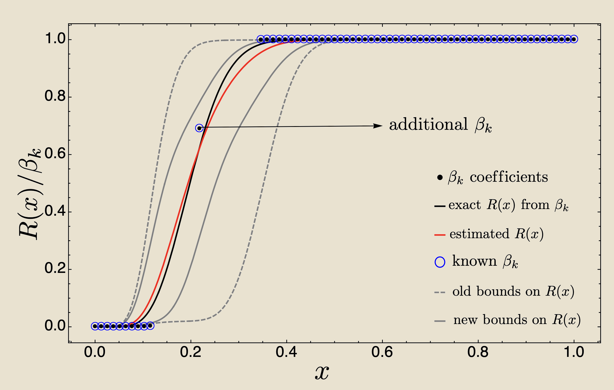
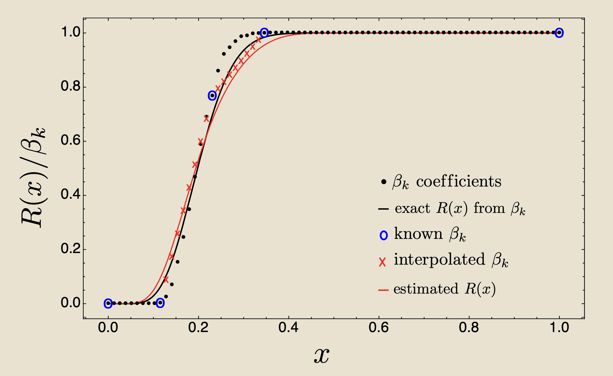

Moore-Shannon network reliability asks: what is the probability that a network satisfies a given property when each edge operates independently at random? Computing it exactly is a \(\#P\)-hard problem — provably hard even to approximate for general networks. This work extends the strong- and weak-coupling perturbative methods of statistical physics to network reliability: the two Taylor series, one from each end of the probability range, combine naturally in the Bernstein polynomial basis. Although exact computation is provably hard, perturbative methods can estimate reliability — and its derivatives — with sufficiently good precision for all practical purposes.
The method yields new results in epidemic modelling on contact networks, contagion analysis in international food trade, and Ising model partition functions — domains where standard series methods fail or are inapplicable. This page covers the mathematical foundations.
Consider a graph \(\mathcal{G}\) with vertex set \(V\) and \(E\) edges, where vertices represent the components of a system and edges represent interactions. \(\mathcal{G}\) may be directed, weighted, multiplexed, time-dependent, or composed of inhomogeneous nodes. Moore-Shannon network reliability \(R(x;\,\mathcal{G},D,P)\) gives the probability that \(\mathcal{G}\) satisfies a property \(P\) under dynamics \(D\), where \(x\) is the probability that each edge operates. If \(P_k\) denotes the fraction of size-\(k\) subgraphs satisfying \(P\), then the probability of selecting a particular subgraph of size \(k\) from all \(E\) edges and having it satisfy \(P\) is \(P_k x^k(1-x)^{E-k}\), and summing over all subgraph sizes gives
\[R(x;\,\mathcal{G},D,P) \;=\; \sum_{k=0}^{E} P_k \binom{E}{k} x^k(1-x)^{E-k}.\]Evaluating this sum exactly is \(\#P\)-hard in general. \(R\) is a monotonically non-decreasing polynomial of degree \(E\) with \(R(0) = 0\) and \(R(1) = 1\). These properties — monotonicity and the boundary conditions — allow it to be written in the Bernstein basis:
\[R(x) \;=\; \sum_{k=0}^{E} \beta_k\, B(E,k,x), \qquad B(E,k,x) = \binom{E}{k} x^k(1-x)^{E-k}.\]The Bernstein coefficients \(\beta_k\) are obtained from the Taylor coefficients \(\alpha_l\) of the expansion around \(x=0\) via
\[\beta_k \;=\; \sum_{l=0}^{k} \alpha_l \binom{E-l}{E-k} \Bigg/ \binom{E}{k}.\]The strut/cut duality is built into the Bernstein basis through
\[B(E,k,x) \;=\; B(E,\,E-k,\,1-x),\]which means the coefficients from the \(x = 0\) expansion are exactly the reverse of those from \(x = 1\), and the two Taylor series can be combined and evaluated stably using de Casteljau's algorithm. Neither expansion alone covers the full probability range: each Taylor series has a radius of convergence that may not extend to the other boundary, leaving the transition region poorly estimated from either end. Combining both in the Bernstein basis resolves this, providing reliable estimates throughout. As more boundary coefficients become known, the bounds tighten toward the exact polynomial.
The reliability polynomial can often be built from the probabilities of two special types of subgraphs. A strut is a subgraph for which the property \(P\) holds; a cut is a subgraph whose removal makes \(P\) impossible. The smallest struts and cuts — those with no redundant edges — are called cruxes. Expanding \(R(x)\) around \(x = 0\) uses struts; expanding around \(x = 1\) uses cuts. When cruxes are not known analytically, Monte Carlo sampling identifies them, and the resulting bounds are provably tight.
For the toy network below, the property \(P\) is the existence of a path from \(S\) to \(T\). The property can be expressed as a Boolean satisfiability (SAT) problem: the network is reliable if there exists at least one active path from \(S\) to \(T\). The three minimal struts — the minimum edge subsets that each form an \(S\)–\(T\) path — give \(\mathcal{E} = (e_1 \wedge e_2 \wedge e_3) \vee (e_1 \wedge e_4 \wedge e_5) \vee (e_6 \wedge e_7)\), where \(\wedge\) requires all edges in a path to operate and \(\vee\) requires at least one such path to exist. For this degree-7 polynomial, the Taylor coefficients from \(x=0\) are \(\alpha = (0,\, 0,\, 1,\, 2,\, 0,\, {-3},\, 0,\, 1)\) and from \(x=1\) are \(\tilde{\alpha} = (1,\, 0,\, {-2},\, {-7},\, 20,\, {-18},\, 7,\, {-1})\). Combining both via the Bernstein transformation gives
\[\beta \;=\; \Bigl(0,\;\; 0,\;\; \tfrac{1}{21},\;\; \tfrac{1}{5},\;\; \tfrac{18}{35},\;\; \tfrac{19}{21},\;\; 1,\;\; 1\Bigr),\]with \(\beta_0 = 0\) and \(\beta_7 = 1\) enforcing the boundary conditions \(R(0)=0\) and \(R(1)=1\) exactly. Each truncated Taylor series (purple) is accurate near its own boundary but diverges where the other is needed. The Bézier/Bernstein interpolation (green) combines both expansions and tracks the exact polynomial (dashed) throughout the transition region.

On the Zachary Karate Club network — 34 vertices, 78 edges — adding a single additional \(\beta_k\) at the midpoint already improves the boundary-only estimate substantially. Measuring 7 additional \(\beta_k\) values — rather than all 17 unknown ones — gives a good estimate of \(R(x)\), as long as the right 7 values are measured.


The epidemic and food trade applications are covered in full on the Epidemic & Trade Networks project page.